Modules reference
Drafted with AI, not yet reviewed
The prelude’s modules are imported by name, import "keycap/screws" as screws;, wherever the script is; see Imports.
Their functions are written here as their examples call them, by the name each section’s import gives the module.
Signatures and their types are explained in Concepts.
A script’s own top-level function replaces a prelude function of the same name inside the modules too: with fn cylinder(r, h) { ... } in the script, magnets::magnet("6x3") is built from that cylinder, and nothing says so.
So don’t give a script’s functions the prelude’s names.
The tables of standard parts only supply dimensions, by size: every shape also takes its dimensions directly.
The tables, and the prelude’s metric, follow the standards they name; their numbers are from tables that makers and distributors publish, not from the standards’ own text.
Each table says where its numbers come from and marks those only one source gives as unverified.
Check a dimension against the datasheet of the part you have before relying on it.
Threads
import "keycap/threads" as threads;
- 3D · keycap#
threads::iso_261(): #{ [size: string]: number } Coarse pitches of ISO metric threads, by size.
A size is
"M"and the thread’s nominal diameter in mm:"M3"is 3 mm across. The pitch is how far the thread rises in one turn. ISO 261 lists the coarse and fine pitches of every size, and ISO 262 picks the sizes for bolts, screws and nuts; these are those sizes’ coarse pitches.Notes- From Wikipedia’s table of the standards, not from their own text.
See alsothreads::size,threads::basic.ReferencesExample The pitch of an M3 screw.
threads::iso_261()["M3"]
0.5- 3D · keycap#
threads::basic(d: number, pitch: number): Threadtype Thread = #{d: number,pitch: number,H: number,d2: number,d1: number,d3: number,} The diameters of an ISO metric thread’s basic profile, from its diameter and pitch.
d- the major diameter, the thread’s nominal size
pitch- the rise per turn; negative for a left-hand thread
The returned map:
d,pitch- as given
H- the height of the sharp 60-degree V the profile is cut from,
sqrt(3) / 2times the pitch d2- the pitch diameter,
d - 0.75 H, where the thread’s ridges and grooves are equally wide d1- the minor diameter,
d - 1.25 H: the internal thread’s crests, and the basic profile’s roots d3- an external thread’s minor diameter with ISO 724’s rounded root,
d - 1.226869 pitch
The basic profile is ISO 68-1’s: the V with
H / 8cut off at the crests andH / 4at the roots.Notesd3is from Wikipedia, unverified against ISO 724.
See alsothreads::size,threads::external,threads::internal.ReferencesExample The minor diameter of an M8x1 thread, 8 mm across with a fine pitch of 1 mm.
threads::basic(8, 1.0).d1
6.917468245269452- 3D · keycap#
threads::size(size: string): Threadtype Thread = #{d: number,pitch: number,H: number,d2: number,d1: number,d3: number,} A metric thread by its name:
"M3"with its coarse pitch,"M8x1"with the pitch given.size"M", the nominal diameter in mm, and optionally"x"and the pitch in mm
The map is
threads::basic’s. Without a pitch, the size must be one ofthreads::iso_261’s.See alsothreads::basic,threads::iso_261.ReferencesExample An M3 thread’s pitch diameter.
threads::size("M3").d2
2.6752404735808355- 3D · keycap#
threads::external(size: string | Thread,h: Height,opts: #{ clearance?: number } = #{},): Shapetype Thread = #{d: number,pitch: number,H: number,d2: number,d1: number,d3: number,}type Height = number | [number, number] Threaded rod along Z: an external ISO metric thread with its basic profile.
size- a size,
"M8"or"M8x1", asthreads::sizetakes it, or a map fromthreads::basic h- its length, centred on z = 0, or
[z0, z1] optsclearance- taken off the profile all round, 0.2 by default; 0 for the nominal thread
The ends are cut flat. The crests are flat at the major diameter
d, and the roots flat at the minor diameterd1. That is ISO 68-1’s basic profile, without ISO 724’s rounded root.The default clearance is printing practice, not a standard, and printers differ. 0.1 to 0.2 on the radius is the usual first guess for a printed thread. Forum reports put vertical threads in good PLA (polylactic acid) at about 0.1, and horizontal ones, or PETG (glycol-modified polyethylene terephthalate), at about twice that. Printed external threads below M6 come out poorly. Print a test piece first.
Notes- Field: steep 1.003 on the flanks, up to 1.003 times the distance for ISO coarse pitches, more for steeper threads; a bound near the ends’ edges.
- About 60 operations.
See alsothreads::internal,screws::screwwiththreaded.References- ISO metric screw thread, Wikipedia
- ISO 68-1, Basic and design profiles
- All3DP’s guide to printing threads and screws, for printed threads’ clearance and smallest sizes
- A Prusa forum thread on printed threads, its users’ reports
Example A printed M8 bolt, a hex head on 20 mm of thread.
let head = hexagon_af(13).extrude([0, 5.3]); let shaft = threads::external("M8", [-20, 1]); union(head, shaft)
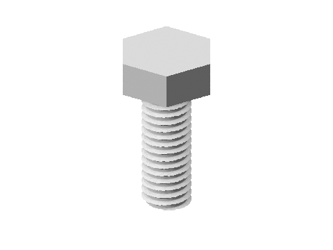
- 3D · keycap#
threads::internal(size: string | Thread,depth: number,opts: #{ clearance?: number } = #{},): Shapetype Thread = #{d: number,pitch: number,H: number,d2: number,d1: number,d3: number,} Cutter for an internal ISO metric thread: the threaded hole from z = -
depthup to z = 0, and a plain bore of the major diameter above it, without end.size- a size,
"M8"or"M8x1", asthreads::sizetakes it, or a map fromthreads::basic depth- the threaded length below z = 0
optsclearance- added to the profile all round, 0 by default, the nominal thread
The hole’s bottom is flat. The profile is
threads::external’s, the basic profile.A printed bolt from
threads::externalcarries the clearance of the pair, so its nut needs none. For a bought bolt, give the hole a clearance, asthreads::externalsuggests. Printed internal threads below M4 come out poorly: a heat-set insert or a tapped hole does better.Notes- Field: steep 1.003 on the flanks, as
threads::external’s; a bound near the bottom’s edge. - About 70 operations.
See alsothreads::external,nuts::nutwiththreaded,insert_hole.Example A printed nut for a printed M8 bolt.
let nut = hexagon_af(13).extrude([0, 6.8]); let socket = threads::internal("M8", 10).move([0, 0, 8]); nut.difference(socket)
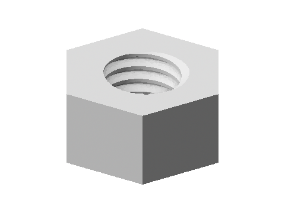
Screws
import "keycap/screws" as screws;
- 3D · keycap#
screws::iso_4762(): #{ [size: string]: #{ dk: number, k: number, s: number, t: number } } Socket head cap screws’ heads (ISO 4762), by size.
Each size’s row, in the standard’s symbols:
dk- the head’s diameter, the standard’s maximum
k- the head’s height, the standard’s maximum
s- the hex socket’s width across its flats
t- the socket’s depth, the least the key goes in
See alsoscrews::spec,screws::screw,screw_hole.References- ISO 4762, Hexagon socket head cap screws
- fasteners.eu’s table of ISO 4762, the values’ source
Example An M3 socket head’s diameter.
screws::iso_4762()["M3"].dk
5.5- 3D · keycap#
screws::iso_7380(): #{ [size: string]: #{ dk: number, k: number, s?: number, t?: number } } Button head screws’ heads (ISO 7380-1), by size.
Each size’s row, in the standard’s symbols:
dk- the head’s diameter, the standard’s maximum
k- the head’s height, the standard’s maximum
s- the hex socket’s width across its flats
t- the socket’s depth, the least the key goes in
ISO 7380-1 starts at M3. M2 and M2.5 are common supplier sizes, with no socket given. Button heads with a collar, ISO 7380-2, are larger.
Notes- M2 and M2.5 are unverified.
See alsoscrews::spec,screws::screw,screw_hole.References- ISO 7380-1, Hexagon socket button head screws
- Fuller Fasteners’ table of ISO 7380-1, the heads’ source
- fasteners.eu’s table of ISO 7380, the sockets’ depths’ source
Example An M4 button head’s height.
screws::iso_7380()["M4"].k
2.2- 3D · keycap#
screws::iso_10642(): #{ [size: string]: #{ dk: number, dk_min: number, k: number, s: number } } Countersunk socket head screws’ heads (ISO 10642), 90 degrees, by size.
Each size’s row, in the standard’s symbols:
dk- the head’s theoretical diameter, its sharp edge’s
dk_min- the smallest actual diameter, after the edge’s break
k- the head’s height, the standard’s maximum
s- the hex socket’s width across its flats
The table starts at M3;
screws::iso_7046has M2 and M2.5.Notes- ISO 10642’s 2019 edition has M2 and M2.5 too, which the table lacks.
See alsoscrews::iso_7046,screws::spec,screws::screw,screw_hole.References- ISO 10642, Hexagon socket countersunk head screws
- Fuller Fasteners’ table of ISO 10642, and Westfield Fasteners’, the values’ sources
Example An M3 countersunk head’s diameter.
screws::iso_10642()["M3"].dk
6.72- 3D · keycap#
screws::iso_7046(): #{ [size: string]: #{ dk: number, dk_max: number, dk_min: number, k: number } } Countersunk cross-recess screws’ heads (ISO 7046-1), 90 degrees, by size: the small sizes that
screws::iso_10642lacks.Each size’s row, in the standard’s symbols:
dk- the head’s theoretical diameter, its sharp edge’s
dk_max,dk_min- the actual diameter’s range
k- the head’s height, the standard’s maximum
A cross recess takes a cross-shaped bit, Phillips or Pozidriv, so the rows have no socket.
See alsoscrews::iso_10642,screws::spec.References- ISO 7046-1, Countersunk flat head screws with cross recess
- Fuller Fasteners’ table of ISO 7046-1, the values’ source
- mechlabgeek’s table of DIN 965, the same screws in the German standard (DIN: Deutsches Institut für Normung)
Example An M2 countersunk head’s diameter.
screws::iso_7046()["M2"].dk
4.4- 3D · keycap#
screws::iso_4017(): #{ [size: string]: #{ s: number, k: number, k_max: number, e: number } } Hex head screws’ heads (ISO 4017), by size.
Each size’s row, in the standard’s symbols:
s- the head’s width across its flats, the standard’s maximum
k- the head’s nominal height
k_max- its maximum, for product grade B
e- the head’s width across its corners, the standard’s minimum for product grade B
ISO 4017’s screws are threaded all along; ISO 4014’s bolts, threaded part of the way, have the same heads.
Notes- M2 and M2.5 are from one table only, unverified.
See alsoscrews::spec,screws::screw.ReferencesExample An M5 hex head’s width across its flats.
screws::iso_4017()["M5"].s
8.0- 3D · keycap#
screws::iso_273(): #{ [size: string]: #{ fine: number, medium: number, coarse: number } } Clearance holes for bolts and screws (ISO 273), by size.
fine,medium,coarse- the hole’s diameter in each of the standard’s series, from the tightest to the loosest
The prelude’s
metricnames the seriesclose,normalandloose, andscrew_holetakesnormalunless told otherwise. The holes follow the standard, which is for drilled holes. Printed holes come out small, so a printed hole may need to be drawn larger: print a test.See alsoscrews::hole,screw_hole,metric.References- ISO 273, Clearance holes for bolts and screws
- MechCodex’s table of metric clearance holes, and Noramark’s, the values’ sources
Example The usual hole for an M3 screw.
screws::iso_273()["M3"].medium
3.4- 3D · keycap#
screws::spec(size: string, head: string = "socket"): Screwtype Screw = #{d: number,pitch: number,head: Head,}type Head = #{kind: string,dk?: number,k?: number,s?: number,t?: number,} A screw’s dimensions by its size and head, from the tables.
size"M3", or a fine thread,"M8x1": M for metric, the nominal diameter, and after the x the pitch, in mmhead"socket"(ISO 4762),"button"(ISO 7380-1),"countersunk"(ISO 10642, or ISO 7046-1 below M3),"hex"(ISO 4017) or"none"
The returned map is what
screws::screwtakes, to change before passing it on:d- the nominal diameter
pitch- the thread’s pitch
head- the head’s row of its table, with
kind, the head’s name, added
A fine thread has the same head as its coarse size.
See alsoscrews::screw,screws::iso_4762,screws::iso_7380,screws::iso_10642,screws::iso_7046,screws::iso_4017,threads::size.Example An M3 button head screw’s dimensions.
screws::spec("M3", "button")
#{d: 3.0, head: #{dk: 5.7, k: 1.65, kind: "button", s: 2.0, t: 1.04}, pitch: 0.5}- 3D · keycap#
screws::screw(size: string | Screw,length: number,opts: #{ head?: string | Head, threaded?: bool } = #{},): Shapetype Screw = #{d: number,pitch: number,head: Head,}type Head = #{kind: string,dk?: number,k?: number,s?: number,t?: number,} A metric screw, for reference and assemblies: its head on z = 0 and its shank going down.
size- a size,
"M3", asscrews::spectakes it, or the dimensions, a map fromscrews::spec length- the screw’s nominal length below z = 0, from under the head; the whole screw’s for a countersunk one
optshead- the head, a kind as
screws::specnames them,"socket"by default, or its dimensions, a map threaded- an ISO thread, from
threads::external, instead of a plain shank; false by default
The heads, from z = 0 up, or down for a countersunk one:
"socket"- a cylinder
dkacross andktall "button"- a spherical cap
dkacross andktall "countersunk"- a 90-degree cone from
dkacross at z = 0 down to the shank "hex"- a hexagon
sacross its flats,ktall, its flats parallel to X "none"- no head
A head with
sandthas a hex socketsacross its flats andtdeep.Notes- Field: exact outside, except in the socket; a bound inside where the head meets the shank; with
threaded, the thread’s. - Plain, with sharp edges: the standards’ chamfers and radii are left out.
See alsoscrews::spec,screws::hole,screw_hole,threads::external.Example An M3 screw, 10 mm long, in a counterbore flush with the top of a plate.
let block = cuboid([16, 16, 6]).difference(screw_hole("M3", 10)); union(block, screws::screw("M3", 10))
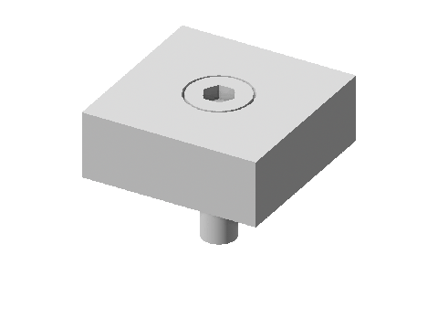
- 3D · keycap#
screws::hole(d: number,length: number,opts: #{ counterbore?: number, countersink?: number } = #{},): Shape Cutter for a screw of any size: a hole
dacross, from z = -lengthup, and the room for its head.d- the hole’s diameter;
screws::iso_273has the standard ones length- the hole’s depth below z = 0
optscounterbore- the diameter of a round head’s room, from z = 0 up
countersink- the diameter at z = 0 of a 90-degree countersink below it
With neither, the hole is open above z = 0 too. With either, the head’s room is open above z = 0 without end.
No clearance is added. Printed holes come out small, so a head’s room needs some on top of the head’s size.
screw_holeadds 0.4, which is printing practice, not a standard.Notes- Field: exact outside, a bound inside where the room meets the hole.
See alsoscrew_holefor sizes by name,screws::iso_273,screws::screw.Example An M2 hole as wide as the screw, under a room 4 mm across for its head.
let block = cuboid([10, 10, 6]); let hole = screws::hole(2, 10, #{counterbore: 4}).move([0, 0, 1]); block.difference(hole)
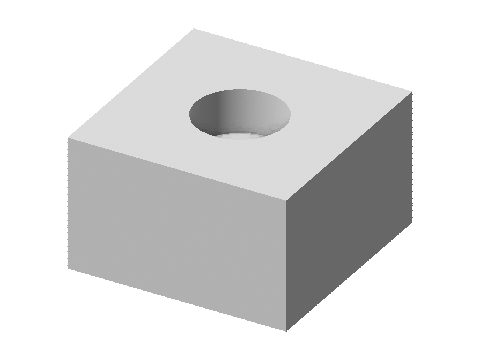
Nuts and washers
import "keycap/nuts" as nuts;
- 3D · keycap#
nuts::iso_4032(): #{ [size: string]: #{ s: number, m: number, m_min: number, e: number } } Hex nuts (ISO 4032), by size.
Each size’s row, in the standard’s symbols:
s- the width across the flats, the standard’s maximum
m- the height, the standard’s maximum
m_min- its minimum
e- the width across the corners, the standard’s minimum
See alsonuts::spec,nuts::nut,nut_trap.References- ISO 4032, Hexagon regular nuts
- fasteners.eu’s table of ISO 4032, the values’ source
Example An M3 nut’s height.
nuts::iso_4032()["M3"].m
2.4- 3D · keycap#
nuts::iso_4035(): #{ [size: string]: #{ s: number, m: number, m_min: number } } Thin hex nuts (ISO 4035), by size.
Each size’s row, in the standard’s symbols:
s- the width across the flats, the standard’s maximum
m- the height, the standard’s maximum
m_min- its minimum
A thin nut holds less than a regular one; ISO 4035 means it as a jam nut, tightened against a regular nut.
Notes- The source’s width across the corners is left out: its M5 value disagrees with ISO 4032’s for the same hexagon.
See alsonuts::iso_4032,nuts::spec.References- ISO 4035, Hexagon thin nuts
- fasteners.eu’s table of ISO 4035, the values’ source
Example An M3 thin nut’s height.
nuts::iso_4035()["M3"].m
1.8- 3D · keycap#
nuts::din_562(): #{ [size: string]: #{ s: number, m: number, m_min?: number, e?: number } } Square thin nuts (DIN 562), by size.
Each size’s row, in the standard’s symbols:
s- the width across the flats, the standard’s maximum
m- the height, the standard’s maximum
m_min- its minimum
e- the width across the corners, the standard’s minimum
DIN 562 is a German standard (DIN: Deutsches Institut für Normung), with no ISO counterpart. Square nuts are common in printed parts’ nut slots and in laser-cut T-slots.
Notes- M2 and M2.5 are from a single catalogue, unverified, and have no
m_minore.
See alsonuts::spec,nuts::slot,lc::t_slot.References- DIN 562, Square thin nuts
- Bolts Fastener’s table of DIN 562, and SS Fasteners’, the sources of M3 to M8
- A catalogue’s table of DIN 562, the source of M2 and M2.5
Example An M3 square nut’s width.
nuts::din_562()["M3"].s
5.5- 3D · keycap#
nuts::iso_7040(): #{ [size: string]: #{ s: number, h: number, h_min: number } } Nyloc nuts (ISO 7040), by size: hex nuts with a nylon ring that grips the screw, so that they do not work loose.
Each size’s row, in the standard’s symbols:
s- the width across the flats, the standard’s maximum
h- the whole height, with the nylon ring’s dome, the standard’s maximum
h_min- its minimum
M3 and M4 are in the standard’s annex; there is no M2 or M2.5.
Notes- For M5, ISO 7040:2025 gives
h6.8, while older tables and the German DIN 982 (DIN: Deutsches Institut für Normung) give 6.3. - For M6, older tables give
h_min7.7.
See alsonuts::spec,nuts::nut.References- ISO 7040, Prevailing torque hexagon nuts with non-metallic insert
- Brass Components’ page on ISO 7040, the values’ source
- fasteners.eu’s table of ISO 7040, an older table
- Nyloc nut, Wikipedia
Example An M3 nyloc nut’s height.
nuts::iso_7040()["M3"].h
4.5- 3D · keycap#
nuts::iso_7089(): #{ [size: string]: Washer }type Washer = #{d1: number,d2: number,h: number,} Plain washers, normal series, product grade A (ISO 7089), by size.
Each size’s row, in the standard’s symbols:
d1- the hole, the standard’s minimum
d2- the outer diameter, the standard’s maximum
h- the thickness, nominal
The German DIN 125-A washers (DIN: Deutsches Institut für Normung) are the same size.
Notes- From a table of DIN 125, not from the standard’s own text.
See alsonuts::washer.ReferencesExample An M3 washer’s outer diameter.
nuts::iso_7089()["M3"].d2
7.0- 3D · keycap#
nuts::spec(size: string, kind: string = "hex"): Nuttype Nut = #{d: number,pitch: number,shape: string,s: number,m: number,} A nut’s dimensions by its size and kind, from the tables.
size"M3", or a fine thread,"M8x1": M for metric, the nominal diameter, and after the x the pitch, in mmkind"hex"(ISO 4032),"thin"(ISO 4035),"square"(DIN 562) or"nyloc"(ISO 7040)
The returned map is what
nuts::nut,nuts::trapandnuts::slottake, to change before passing it on:d,pitch- the thread’s
shape"hex"or"square"s- the width across the flats
m- the height; a nyloc nut’s whole height, with its dome
A fine thread has the same nut as its coarse size.
See alsonuts::nut,nuts::trap,nuts::slot,nuts::iso_4032,nuts::iso_4035,nuts::din_562,nuts::iso_7040.Example An M3 square nut’s dimensions.
nuts::spec("M3", "square")
#{d: 3.0, m: 1.8, pitch: 0.5, s: 5.5, shape: "square"}- 3D · keycap#
nuts::nut(size: string | Nut,opts: #{ kind?: string, threaded?: bool } = #{},): Shapetype Nut = #{d: number,pitch: number,shape: string,s: number,m: number,} A metric nut, for reference and assemblies, standing on z = 0.
size- a size,
"M3", asnuts::spectakes it, or the dimensions, a map fromnuts::spec optskind- for a size, as
nuts::specnames them,"hex"by default threaded- an ISO thread in its hole, from
threads::internal, instead of a plain holedacross; false by default
Its flats are parallel to the X axis. A nyloc nut is drawn as a plain nut as tall as its dome.
Notes- Field: exact inside, a bound outside near the hole’s edges.
- Plain, with sharp edges: the standards’ chamfers are left out.
See alsonuts::spec,nuts::trap,nuts::slot,nuts::washer.Example An M5 hex nut.
nuts::nut("M5")
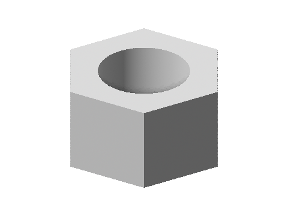
- 3D · keycap#
nuts::washer(size: string | Washer): Shapetype Washer = #{d1: number,d2: number,h: number,} A plain washer, lying on z = 0.
size- a size,
"M3", fromnuts::iso_7089, or the dimensions, a map as its rows
Notes- Field: exact.
See alsonuts::iso_7089,nuts::nut.Example An M8 washer.
nuts::washer("M8")
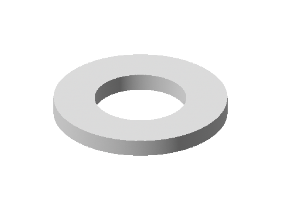
- 3D · keycap#
nuts::trap(size: string | Nut,depth: number,opts: #{ kind?: string, clearance?: number } = #{},): Shapetype Nut = #{d: number,pitch: number,shape: string,s: number,m: number,} Cutter for a nut dropped in from above: a pocket of its outline from z = -
depthup without end.size- a size,
"M3", asnuts::spectakes it, or the dimensions, a map fromnuts::spec depth- the pocket’s depth below z = 0, at least the nut’s height
optskind- for a size, as
nuts::specnames them,"hex"by default clearance- added across the flats, 0.4 by default
The flats are parallel to the X axis, as the nut’s.
The nut follows the standard. The clearance is printing practice, not a standard; the prelude’s
nut_traphas the same default.Notes- Field: exact inside, a bound outside near the bottom’s corners.
See alsonut_trap,nuts::slot,screw_hole.Example A square M4 nut dropped into a block whose top is at z = 5.
let block = cuboid([14, 14, 10]); let trap = nuts::trap("M4", 3, #{kind: "square"}).move([0, 0, 5]); block.difference(trap)
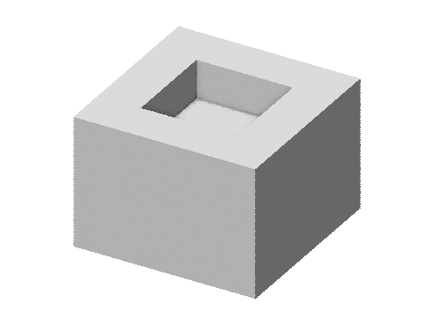
- 3D · keycap#
nuts::slot(size: string | Nut,length: number,opts: #{ kind?: string, clearance?: number } = #{},): Shapetype Nut = #{d: number,pitch: number,shape: string,s: number,m: number,} Cutter for a captive nut slid in from the side: a pocket of its outline centred on the origin, with a slot to +X.
size- a size,
"M3", asnuts::spectakes it, or the dimensions, a map fromnuts::spec length- the slot’s length from the nut’s centre; long enough to reach out of the part
optskind- for a size, as
nuts::specnames them,"hex"by default clearance- added to the nut’s height and across its flats, 0.4 by default
The pocket is the nut’s height plus
clearancetall, centred on z = 0. The slot is as wide as the pocket across its flats.The nut follows the standard. The clearance is printing practice, not a standard; the prelude’s
nut_slothas the same default.Notes- Field: exact outside, a bound inside where the slot meets the pocket.
See alsonut_slot,nuts::trap,screw_hole.Example A slot for a square M3 nut from the middle of a part out through its side.
let block = cuboid([16, 12, 8]); block.difference(nuts::slot("M3", 10, #{kind: "square"}))
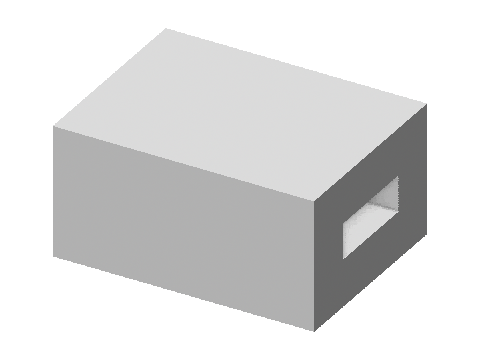
Heat-set inserts
import "keycap/inserts" as inserts;
- 3D · keycap#
inserts::ruthex(): #{ [size: string]: Insert }type Insert = #{length: number,d?: number,hole: number,wall: number,} Ruthex’s standard heat-set inserts, its RX series, by size.
Each size’s row, with the makers’ symbols:
length- the insert’s length (L)
d- its outer diameter, across the knurl (D1)
hole- the hole Ruthex asks for (D3)
wall- the least wall around the hole (W)
Ruthex asks for a hole at least 1 mm deeper than the insert is long.
Notes- M2, M2.5, M5 and M8 have no outer diameter.
- M5’s hole is from one table only, and M8’s is 9.6 in one table and 9.7 in another: both unverified.
- From a reseller’s copies of Ruthex’s drawings.
See alsoinserts::spec,inserts::hole,inserts::cnc_kitchen.References- Ruthex’s drawing tables, as 3DJake reproduces them, for M3, M4 and M6
- Ruthex’s CAD files of its inserts
Example The hole for Ruthex’s M3 insert.
inserts::ruthex()["M3"].hole
4.0- 3D · keycap#
inserts::cnc_kitchen(): #{ [size: string]: Insert }type Insert = #{length: number,d?: number,hole: number,wall: number,} CNC Kitchen’s standard heat-set inserts, its short ones and its M3 Voron insert, by name.
Each insert’s row, with the makers’ symbols:
length- the insert’s length (L)
d- its outer diameter, across the knurl (D1)
hole- the hole CNC Kitchen asks for (D3)
wall- the least wall around the hole (W)
The Voron insert is the short, wide M3 insert the Voron printers’ parts are drawn for. CNC Kitchen asks for a hole about 1 mm deeper than the insert is long.
CNC Kitchen also suggests drawing the M3 hole 4.2 across, since printed holes come out about 0.25 small. That is printing practice, for its printer; the rows keep the datasheet’s holes.
Notes- An older table of CNC Kitchen’s gives holes 0.1 smaller for M4, M5 and M6 (5.6, 6.4, 8.0), as Ruthex’s; which is current is unverified.
See alsoinserts::spec,inserts::hole,inserts::ruthex,metric.References- CNC Kitchen’s insert datasheet, as 3DJake reproduces it
- CNC Kitchen, Tips & Tricks for Heat-Set Inserts
- CNC Kitchen, Are Our Heat-Set Insert Datasheets Wrong?
Example The length of CNC Kitchen’s short M3 insert.
inserts::cnc_kitchen()["M3 short"].length
3.0- 3D · keycap#
inserts::spec(size: string, maker: string = "cnc-kitchen"): Inserttype Insert = #{length: number,d?: number,hole: number,wall: number,} An insert’s dimensions by its size and maker.
size"M3", an insert for an ISO metric screw 3 mm across; for CNC Kitchen also"M3 short","M3 Voron", …maker"cnc-kitchen", the prelude’smetricdefault, or"ruthex"
The returned map is a row of
inserts::cnc_kitchenorinserts::ruthex, and whatinserts::insertandinserts::holetake.See alsoinserts::cnc_kitchen,inserts::ruthex,inserts::hole.Example Ruthex’s M2 insert, longer than CNC Kitchen’s.
inserts::spec("M2", "ruthex")
#{hole: 3.2, length: 4.0, wall: 1.3}- 3D · keycap#
inserts::insert(size: string | Insert,opts: #{ maker?: string } = #{},): Shapetype Insert = #{length: number,d?: number,hole: number,wall: number,} A heat-set insert, for reference and assemblies: a plain cylinder from z = -
lengthup to z = 0.size- a size,
"M3", asinserts::spectakes it, or the dimensions, a map frominserts::spec optsmaker- for a size, as
inserts::specnames them,"cnc-kitchen"by default
It is drawn as wide as its knurl, or as its hole where the table has no outer diameter.
Notes- Field: exact.
See alsoinserts::hole,inserts::spec.Example CNC Kitchen’s M3 insert.
inserts::insert("M3")
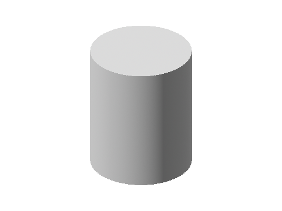
- 3D · keycap#
inserts::hole(size: string | Insert,opts: #{ maker?: string, depth?: number, clearance?: number } = #{},): Shapetype Insert = #{length: number,d?: number,hole: number,wall: number,} Cutter for a heat-set insert: a pocket of the hole its maker asks for, from z = -
depthup without end.size- a size,
"M3", asinserts::spectakes it, or the dimensions, a map frominserts::spec optsmaker- for a size, as
inserts::specnames them,"cnc-kitchen"by default depth- the pocket’s depth below z = 0; by default 1 more than the insert is long, as both makers ask, since melting it in pushes plastic down
clearance- added to the hole’s diameter, 0 by default
The hole is the datasheet’s. The clearance is printing practice, not a datasheet’s: printed holes come out small, about 0.25 on CNC Kitchen’s printer, which draws its M3 hole 0.2 larger. A test print with a few holes tells what yours needs. Leave at least the insert’s
wallaround the hole.Notes- Field: exact.
See alsoinsert_hole, the same for CNC Kitchen’s inserts by size;inserts::insert,inserts::spec.References- CNC Kitchen, Tips & Tricks for Heat-Set Inserts
- CNC Kitchen, Are Our Heat-Set Insert Datasheets Wrong?
- Ruthex’s practice and measurement tools, Printables, for the hole 1 mm deeper than the insert
Example Ruthex’s M3 insert’s hole in a part whose top is at z = 10.
let block = cuboid([12, 12, 20]); let hole = inserts::hole("M3", #{maker: "ruthex"}).move([0, 0, 10]); block.difference(hole)
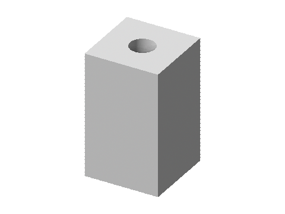
Magnets
import "keycap/magnets" as magnets;
- 3D · keycap#
magnets::size(size: string): Magnettype Magnet = #{d: number,h: number,} A disc magnet’s nominal dimensions from its name.
size- the diameter and the thickness in mm,
"6x3"; common ones are 6x2 (the Gridfinity storage system’s), 6x3, 8x3, 10x3 and 12x3
The returned map has the diameter
dand the thicknessh. Disc magnets are sold by these nominal sizes; no standard defines them.Notes- Suppliers quote 0.1 either way on both, some 0.05: measure a few before drawing a pocket.
See alsomagnets::pocket,magnets::magnet.References- Total Element’s guide to embedding magnets, and Tensor3D’s 6 by 3 magnets, for the tolerances
Example A 6 by 3 magnet.
magnets::size("6x3")
#{d: 6.0, h: 3.0}- 3D · keycap#
magnets::magnet(size: string | Magnet): Shapetype Magnet = #{d: number,h: number,} A disc magnet, for reference and assemblies, from z = -
hup to z = 0.size- a size,
"6x3", asmagnets::sizetakes it, or the dimensions, a map ofdandh
Notes- Field: exact.
See alsomagnets::pocket,magnets::size.Example A 10 by 3 magnet.
magnets::magnet("10x3")
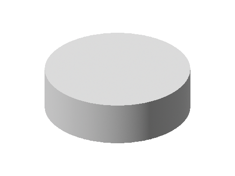
- 3D · keycap#
magnets::pocket(size: string | Magnet,opts: #{ fit?: string | [number, number], closed?: bool } = #{},): Shapetype Magnet = #{d: number,h: number,} Cutter for a disc magnet: a pocket from z = 0 down, larger than the magnet by its fit.
size- a size,
"6x3", asmagnets::sizetakes it, or the dimensions, a map ofdandh optsfit"press"(the default),"glue", or[diameter, depth], added to the magnet’sclosed- the pocket ends at z = 0, for a magnet dropped in while the print is paused and printed over; open above without end by default
The fits are printing practice, not a standard:
"press"- 0.1 on the diameter and 0.1 on the depth; makers press magnets in with 0.1 to 0.2 more on the diameter and 0.1 to 0.2 on the depth
"glue"- 0.2 on the diameter and 0.1 on the depth; makers glue them with 0.2 to 0.3 more on the diameter
Leave 0.4 to 0.8 behind a magnet, so that it keeps its pull.
Notes- Field: exact.
- The sources give fits for 6 by 3 and 8 by 3 magnets; for 10 by 3 and 12 by 3, the same rule is unverified.
See alsomagnets::magnet,magnets::size.References- Total Element’s guide to embedding magnets
- Magnetenspecialist’s guide to magnets in 3D prints
- OzFDM’s guide to embedding magnets, for 6 by 3 magnets
- Neo Magnets’ sizes for 3D printing, for 8 by 3 magnets
Example A 6 by 3 magnet glued into a block whose top is at z = 5.
let block = cuboid([12, 12, 10]); let pocket = magnets::pocket("6x3", #{fit: "glue"}).move([0, 0, 5]); block.difference(pocket)
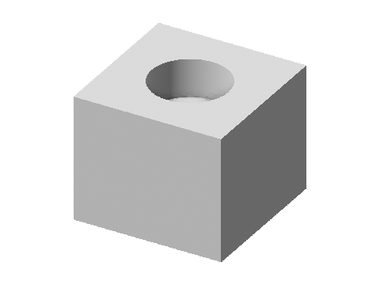
Bearings
import "keycap/bearings" as bearings;
- 3D · keycap#
bearings::deep_groove(): #{ [name: string]: Bearing }type Bearing = #{d: number,D: number,B: number,r?: number,} Deep groove ball bearings, by name: 623, 625, 608, and 61800 to 61803, also named 6800 to 6803.
Each bearing’s row, in ISO 15’s symbols:
d- the bore
D- the outer diameter
B- the width
r- the least chamfer of the rings’ edges
The sizes follow ISO 15. The 618 series and the 68 series are two names for the same bearings: 61800 is 6800.
Notes- 61801 to 61803 have no
r. - From copies of SKF’s product pages, unverified against SKF’s own.
See alsobearings::bearing,bearings::seat,bearings::linear_ball.References- ISO 15, Radial bearings, boundary dimensions
- SKF’s pages of the 623, the 625, the 608 and the 61803
- Distributors’ pages of SKF’s 618 series: bearingsize.info, Tuli, DSF Bearings
- Ball bearing, Wikipedia
Example A 608’s outer diameter, the skateboard bearing’s.
bearings::deep_groove()["608"].D
22.0- 3D · keycap#
bearings::linear_ball(): #{ [name: string]: Bearing }type Bearing = #{d: number,D: number,B: number,groove?: #{ spacing: number, width: number, d: number },} Linear ball bearings, which slide along a shaft, by name: LM8UU.
The bearing’s row:
d- the bore, for the shaft
D- the outer diameter
B- the length
groove- the grooves for the retaining rings:
spacing, their distance apart,width, andd, the diameter at their bottom
LM8UU is a linear motion (LM) bearing for an 8 mm shaft, sealed at both ends (UU). The LM series has no ISO standard; its dimensions are makers’ practice.
See alsobearings::bearing,bearings::seat,bearings::deep_groove.References- ISK Bearing’s LM8UU, and Motedis’s, the values’ sources
- Linear-motion bearing, Wikipedia
Example An LM8UU’s length.
bearings::linear_ball()["LM8UU"].B
24.0- 3D · keycap#
bearings::bearing(size: string | Bearing): Shapetype Bearing = #{d: number,D: number,B: number,r?: number,groove?: #{ spacing: number, width: number, d: number },} A bearing, for reference and assemblies: a ring
Dacross with a bored, from z = -Bup to z = 0.size- a name from
bearings::deep_grooveorbearings::linear_ball,"608", or the dimensions, a map ofd,DandB
Its edges are rounded by
r, where it is known.Notes- Field: exact.
See alsobearings::seat,bearings::deep_groove,bearings::linear_ball.Example A 608 bearing.
bearings::bearing("608")
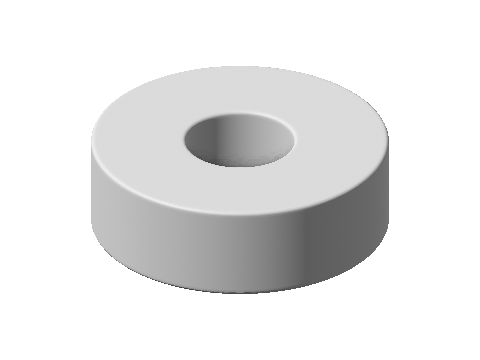
- 3D · keycap#
bearings::seat(size: string | Bearing,opts: #{ fit?: string | number, depth?: number, shoulder?: number } = #{},): Shapetype Bearing = #{d: number,D: number,B: number,r?: number,groove?: #{ spacing: number, width: number, d: number },} Cutter for a bearing pressed in from above: a pocket for its outer ring, and a smaller hole on through below it.
size- a name from
bearings::deep_grooveorbearings::linear_ball,"608", or the dimensions, a map ofd,DandB optsfit- added to the outer diameter:
"press"(0.1, the default),"slide"(0.3), or a number depth- the pocket’s depth below z = 0,
Bby default shoulder- the diameter of the hole on through below the pocket, so that the pocket’s bottom holds the outer ring only; halfway from
dtoDby default; 0 for none
The pocket is open above z = 0 without end, and the hole below it without end. For a bearing held from both sides, cut two seats, one turned over.
The fits are printing practice, not a standard, and no source gives them. Printed holes come out small, so print a test ring before a part.
Notes- Field: exact outside, a bound inside where the hole meets the pocket.
See alsobearings::bearing,bearings::deep_groove.Example A 608 pressed into a plate 10 mm thick, its top at z = 5.
let block = cuboid([30, 30, 10]); let seat = bearings::seat("608").move([0, 0, 5]); block.difference(seat)
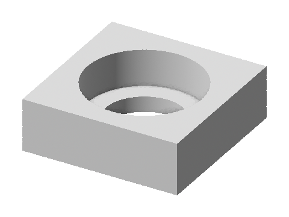
Extrusions
extrusions::profile is a 2D cross-section, and extrusions::beam the 3D bar made from it.
import "keycap/extrusions" as extrusions;
- 3D · keycap#
extrusions::misumi(): #{ [name: string]: Profile }type Profile = #{size: number,slot: number,lip: number,cavity: [number, number],bore: number,corner: number,v?: number,} Misumi’s HFS aluminium extrusions, with B-type slots, by name: HFS5-2020 (slot 6), HFS6-3030 (slot 8) and HFS8-4040 (slot 10).
Each profile’s row:
size- the square’s side
slot- the slot’s opening
lip- the thickness of the overhang either side of the opening
cavity[width, depth], the T-cavity’s width under the lips and its depth below thembore- the centre hole’s diameter
corner- the outer corners’ radius
A name is Misumi’s series, by its slot (HFS5 has slots 6 wide), then the outline: 2020 is 20 by 20 mm. The cavity’s sides are drawn at 45 degrees from its width down to its bottom. The drawings’ 120-degree V of 0.3 at the slot’s bottom is left out.
Notes- From Misumi’s catalogue drawings, unverified against a real profile.
- HFS5-2020’s cavity depth may be its whole depth, lip included: unverified.
- HFS8’s lip is ambiguous on its drawing, and HFS8-4040 is HFS8-4080’s 40 mm side: unverified.
- Item’s own slot 6, 8 and 10 profiles match by slot width only, unverified.
See alsoextrusions::profile,extrusions::beam.References- Misumi’s catalogue drawings of HFS5-2020, HFS6’s slot, HFS6-3030, HFS8-6T-4040 and HFS8-4080
- T-slot structural framing, Wikipedia
Example HFS5-2020’s centre hole, to tap for an M5 screw.
extrusions::misumi()["HFS5-2020"].bore
4.2- 3D · keycap#
extrusions::profile(size: string | Profile): Shapetype Profile = #{size: number,slot: number,lip: number,cavity: [number, number],bore: number,corner: number,v?: number,} 2D cross-section of a square extrusion, a slot on each side, centred on the origin.
size- a name from
extrusions::misumi,"HFS5-2020", or the dimensions, a map as its rows, with one more key:v- for a V-slot, the depth of the 45-degree chamfers either side of the opening, which wheels run on; 0 by default, a B-type slot
The slot’s opening runs through the lips, then widens into the cavity, whose sides close in at 45 degrees towards the centre. The bore runs through the middle.
No table has OpenBuilds’ V-slot. For a V-slot profile, measure one, or read its maker’s drawing, for
slot,lip,cavityandv.Notes- Field: exact inside; outside, in the slots, a bound.
- One slot is drawn, and the others are folds of it: about 600 operations.
See alsoextrusions::beam,extrusions::misumi.ReferencesExample Misumi’s 2020 profile.
extrusions::profile("HFS5-2020")
- 3D · keycap#
extrusions::beam(size: string | Profile, length: number): Shapetype Profile = #{size: number,slot: number,lip: number,cavity: [number, number],bore: number,corner: number,v?: number,} A length of extrusion,
extrusions::profilefrom z = 0 up tolength.size- a name from
extrusions::misumi, or the dimensions, asextrusions::profiletakes them length- the beam’s length
Notes- Field:
extrusions::profile’s.
See alsoextrusions::profile,extrusions::misumi.Example 60 mm of Misumi’s 3030.
extrusions::beam("HFS6-3030", 60)
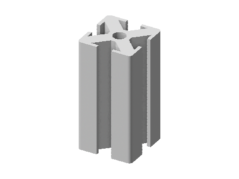
Laser cutting
import "keycap/lasercut" as lc;
- 2D · keycap#
lc::finger_joint(length: number,t: number,opts: #{ count?: number, width?: number, fit?: number, mate?: bool } = #{},): Shape Cutter for one part of a finger joint: the notches along its edge where the other part’s fingers go.
length- the edge’s length
t- the material’s thickness, the notches’ depth
optscount- how many fingers both parts have together, odd and at least 3; the nearest odd count to
length / widthunless given width- the fingers’ width as near as
countallows,2 * tby default, as Boxes.py draws them fit- the clearance between a finger and its notch, 0 by default
matetruefor the other part
The edge is cut into
countsegments of one width. The part keeps the segments at the ends and every other one between; its mate keeps the rest. Both parts’ notches arefit / 2wider than their segments, so each finger isfitnarrower than the notch it goes in. The notches at the ends of the edge reachtpast them, so that the mate’s corners are cut away.fitis the clearance as cut when the 2D export’s kerf is the laser’s; exported with no kerf, the joint comes out looser by twice the kerf. The right fit is cutting practice, not a standard: kerfs differ by machine and material, so cut a test joint first.Notes- Field: exact.
- About 10 operations a notch.
See alsolc::box_panels,lc::tabs,lc::cross_lap.References- Box joint, Wikipedia
- Boxes.py’s edges, whose
FingerJointSettingsdraw fingers and spaces 2 thicknesses wide
Example Two plates joined at a right angle, laid flat, one above the other.
let panel = rect([60, 30]); let joint = lc::finger_joint(60, 3); let mate = lc::finger_joint(60, 3, #{mate: true}); union( panel.difference(joint.move([0, 15])), panel.difference(mate.move([0, 15])).move([0, -35]) )
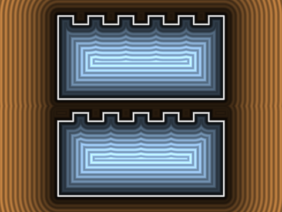
- 2D · keycap#
lc::tabs(length: number,t: number,opts: #{ count?: number, width?: number, depth?: number } = #{},): Shape Tabs along a part’s edge, to go through slots in the part it meets.
length- the edge’s length
t- the material’s thickness
optscount- how many tabs, 2 by default
width- each tab’s width,
2 * tby default depth- how far the tabs stand out of the edge,
tby default, flush with the far face of a part as thick
The tabs are spread evenly, each in the middle of its share of the edge. They reach
tinto the part below the edge, so that the union has no seam there.lc::tab_slotscuts the slots they go through, with the clearance.Notes- Field: exact.
See alsolc::tab_slots,lc::finger_joint.Example A plate with two tabs, and the plate they go through, its slots 0.1 wider.
let tabbed = rect([60, 30]).union(lc::tabs(60, 3).move([0, 15])); let slotted = rect([70, 30]) .difference(lc::tab_slots(60, 3, #{fit: 0.1})); union(tabbed, slotted.move([0, 40]))
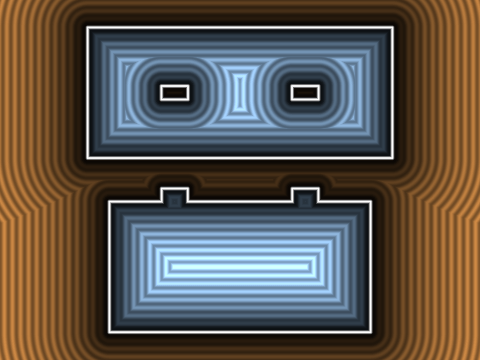
- 2D · keycap#
lc::tab_slots(length: number,t: number,opts: #{ count?: number, width?: number, fit?: number } = #{},): Shape Cutter for the slots that
lc::tabsof the samelength,t,countandwidthgo through.length- the tabbed edge’s length
t- the tabbed part’s thickness
optscount,width- as the tabs’, 2 and
2 * tby default fit- the clearance between a tab and its slot, along and across, 0 by default
The slots lie on the X axis, centred on y = 0: put them where the tabbed part’s middle crosses the slotted part. Each is
width + fitlong andt + fitwide.fitis the clearance as cut when the 2D export’s kerf is the laser’s; exported with no kerf, the slots come out wider by the kerf. The right fit is cutting practice, not a standard: cut a test slot first.Notes- Field: exact.
See alsolc::tabs,lc::t_slot.Example A plate with the slots for three tabs.
rect([80, 20]) .difference(lc::tab_slots(70, 3, #{count: 3}))
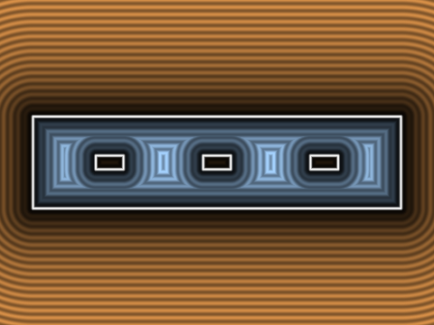
- 2D · keycap#
lc::cross_lap(depth: number,t: number,opts: #{ fit?: number } = #{},): Shape Cutter for a cross-lap (halving) joint: a slot into a part’s edge, for another part slotted into it the other way.
depth- how far the slot goes into the part; the two parts’ slots together are as deep as the parts are where they cross
t- the other part’s thickness
optsfit- the clearance across the slot, 0 by default
The slot is
t + fitwide, centred on x = 0, from y = -depthup past the edge.fitis the clearance as cut when the 2D export’s kerf is the laser’s. The right fit is cutting practice, not a standard: cut a test slot first.Notes- Field: exact.
See alsolc::finger_joint,lc::tab_slots.ReferencesExample Two parts 20 tall that cross, each slotted halfway.
let panel = rect([60, 20]); let lap = lc::cross_lap(10, 3); union( panel.difference(lap.move([0, 10])), panel.difference(lap.rotate_z(180).move([0, -10])).move([0, -25]) )
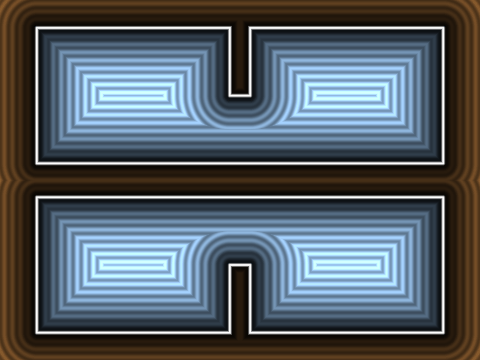
- 2D · keycap#
lc::t_slot_spec(size: string,opts: #{ kind?: string, hole?: string } = #{},): TSlottype TSlot = #{d: number,s: number,m: number,} A T-slot’s dimensions for a metric screw and nut, from the tables of
keycap/screwsandkeycap/nuts.size"M3", an ISO metric screw 3 mm acrossoptskind- the nut, as
nuts::specnames them,"hex"by default;"square"is common in T-slots hole- the screw’s clearance hole, as
screws::iso_273names its series,"medium"by default
The returned map is what
lc::t_slottakes, to change before passing it on:d- the screw’s slot’s width, and its hole’s diameter in the other part
s- the nut’s width across its flats
m- the nut’s height
The values follow the standards and have no clearance;
lc::t_slotadds itsfit.See alsolc::t_slot,nuts::spec,screws::iso_273.References- ISO 273, Clearance holes for bolts and screws
- ISO 4032, Hexagon regular nuts
- DIN 562, Square thin nuts, a German standard (DIN: Deutsches Institut für Normung)
Example An M3 T-slot’s dimensions, for a square nut.
lc::t_slot_spec("M3", #{kind: "square"})
#{d: 3.4, m: 1.8, s: 5.5}- 2D · keycap#
lc::t_slot(size: string | TSlot,length: number,t: number,opts: #{ at?: number, fit?: number, kind?: string, hole?: string } = #{},): Shapetype TSlot = #{d: number,s: number,m: number,} Cutter for a T-slot: a slot into a part’s edge for a screw through the part it meets, and a pocket across it for the nut.
size- a size,
"M3", aslc::t_slot_spectakes it, or the dimensions, a map fromlc::t_slot_spec length- the screw’s length, under its head
t- the thickness of the part the screw goes through first
optsat- the nut’s middle from the edge; unless given, the screw’s tip is half a nut past the nut
fit- the clearance round the nut, and past the screw’s tip, 0 by default
kind,hole- for a size, as
lc::t_slot_spectakes them
The screw’s slot is
dwide andlength - t + fitdeep. The nut’s pocket iss + fitacross andm + fitalong the screw. The nut stands in it on edge, its flats against the pocket’s sides, so that it cannot turn. In the other part, a holedacross takes the screw:circle(lc::t_slot_spec("M3").d / 2).fitis the clearance as cut when the 2D export’s kerf is the laser’s. The right fit is cutting practice, not a standard: cut a test slot first.Notes- Field: exact outside, a bound inside where the pocket crosses the slot.
See alsolc::t_slot_spec,lc::tab_slots.Example An M3 T-slot for a 12 mm screw through 3 mm material, and the hole in the other part.
let bar = rect([40, 20]); let slot = lc::t_slot("M3", 12, 3).move([0, 10]); let tab = rect([40, 6]).difference(circle(1.7)).move([0, 16]); union(bar.difference(slot), tab)
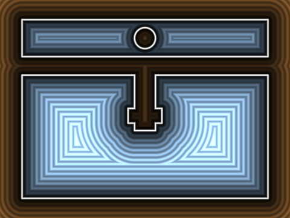
- 2D · keycap#
lc::living_hinge(size: Vec2,t: number,opts: #{ length?: number, width?: number, pitch?: number, bridge?: number, pattern?: string } = #{},): Shape Cutter for a living hinge: rows of slots across a sheet, so that it bends about the X axis.
size[width, height]of the area the slots fill, centred on the origin; the bend runs along its heightt- the material’s thickness
optslength- each slot’s length, along X,
9 * tby default width- each slot’s width,
t / 6by default, 0.5 for 3 mm pitch- the rows’ spacing, centre to centre,
0.5 * tby default bridge- the material between two slots in a row,
tby default pattern"straight", the default, or"snake"
The rows are as many as fit in the area’s height, centred on it.
In a
"straight"hinge, every other row is shifted along X by half a slot plus half a bridge. Where a slot of one row overlaps those of the next, the strip between them twists as the sheet bends. The area’s sides cut the slots that reach them, leaving them open there. An areanslots andn + 1bridges wide, for anyn, has whole bridges at the sides of every other row.In a
"snake"hinge, each row is one slot from a side of the area tobridgeshort of the other, from alternate sides, so the strips fold back and forth.lengthis unused.Each slot is cut along its outline. With the 2D export’s kerf set to the laser’s, a slot comes out as wide as drawn, and a slot no wider than the kerf is not cut at all.
The default length, pitch and bridge are Boxes.py’s, in thicknesses; with 3 mm plywood they are close to other published generators’. They are a starting point, not tested values: a hinge’s bend depends on the material more than a fit does, so cut a test strip first.
lc::hinge_forsizes a straight hinge for a bend.Notes- Field: exact inside the area, a bound outside it.
- Constant cost, whatever the number of slots.
See alsolc::hinge_for,lc::hinge_materials.References- Living hinge, Wikipedia
- Boxes.py’s edges, whose
FlexSettingsset the defaults - Fenner, Laser-cut Lattice Living Hinges, on how the strips twist
- FlatCAD’s living hinge generator, with spacings for plywood, MDF (medium-density fibreboard) and card
- Trotec, Cutting technique for bending applications, on materials and patterns
Example A 3 mm plate with a hinge across its middle.
rect([120, 60]) .difference(lc::living_hinge([120, 30], 3))
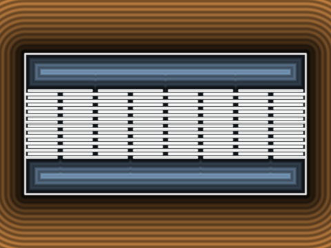
- 2D · keycap#
lc::hinge_materials(): #{ [material: string]: #{ pitch: number, bridge: number, strain: number } } Straight living hinges’ defaults by material, for
lc::hinge_for: plywood, MDF (medium-density fibreboard) and acrylic.Each material’s row:
pitch- the rows’ spacing, in thicknesses
bridge- the material between two slots in a row, in thicknesses
strain- the most shear strain a twisting strip may take, for a bend held for good
The strains are estimates from the materials’ data, not tests of hinges. Birch plywood fails in shear near 1.5%, less Néron’s safety factors for a lasting load. MDF is designed at 1%, as Speetzen and Kobbelt do. Acrylic is held to its maker’s safe stress. For a bend made once in assembly, plywood takes about 1%, MDF 1.1% and acrylic 0.5%.
The pitches are for 3 mm sheet.
Notes- MDF’s and acrylic’s pitches are from guides that show no tests: unverified.
- The plywood data is for structural birch plywood 4 mm and thicker; 3 mm hobby plywood’s is unverified.
See alsolc::hinge_for,lc::living_hinge.References- Boxes.py’s edges, for plywood’s pitch and bridge
- FlatCAD’s living hinge generator, for MDF’s pitch
- Trotec, Cutting technique for bending applications, for acrylic’s pitch
- Metsä Wood, Declaration of performance, birch plywood, for plywood’s shear strength
- Néron, Bending of CLT by the lattice hinge method, WCTE 2023, for the safety factors (CLT: cross-laminated timber)
- Speetzen and Kobbelt, Freeform Shape Fabrication by Kerfing Stiff Materials, Computer Graphics Forum 2024, for MDF
- Röhm, PLEXIGLAS GS/XT technical information, for acrylic’s safe stress
- Fenner, Lattice Hinge Design: Choosing Torsional Stress, for acrylic hinges
Example Plywood’s defaults.
lc::hinge_materials()["plywood"]
#{bridge: 1.0, pitch: 0.5, strain: 0.007}- 2D · keycap#
lc::hinge_for(t: number,span: number,angle: number,radius: number,opts: #{ material?: string, strain?: number, pitch?: number, bridge?: number, width?: number } = #{},): Hingetype Hinge = #{size: Vec2,opts: #{ length: number, width: number, pitch: number, bridge: number },rows: number,link: number,strain: number,} A straight living hinge sized for a bend: as many rows as the bend needs, and slots long enough that the strips between them twist within the material’s strain.
t- the material’s thickness
span- the hinge’s width, along its slots: the part’s width where it bends
angle- the bend, in degrees
radius- the bend’s inner radius
optsmaterial- a row of
lc::hinge_materials,"plywood"by default strain,pitch,bridge- the material’s, unless given;
pitchandbridgein millimetres width- the slots’ width, 0.5 by default
The returned map is what
lc::living_hingetakes,lc::living_hinge(h.size, t, h.opts), and what came out:size- the hinge’s area,
spanby the length of the bend’s arc through the middle of the sheet opts- the slots’
lengthandwidth, the rows’pitchand thebridge rows- how many rows of slots there are
link- the length of each twisting strip, from a bridge of one row to the nearest of the next
strain- the strips’ shear strain at the full bend
Each row turns by an equal share of the angle. Its strips twist by that, which strains them less the longer they are. The strain is a rectangular bar’s in torsion, as Fenner sizes acrylic hinges; the strip’s width is the pitch less the slot’s. The slots are lengthened so that a whole number of slots and bridges fits
span.It throws when a row’s turn would close its slots, or when the strips need more than
span.Notes- An estimate from published models and data, not from tests of hinges: cut a test strip first.
- Strips longer than
4 * tlet the hinge’s edges splay as it bends;linksays how long they came out.
See alsolc::living_hinge,lc::hinge_materials.References- Torsion of a rectangular bar, from the Air Force Stress Manual, for the strain
- Fenner, Laser-cut Lattice Living Hinges, the model
- Fenner, Lattice Hinge Test Results, for the
4 * tlimit - Fenner, Lattice Hinge Design: Minimum Bend Radius, for when the slots close
- Fenner, Lattice Hinge Design: Choosing Torsional Stress
- Néron, Bending of CLT by the lattice hinge method, WCTE 2023, the same model for cross-laminated timber (CLT)
- Speetzen and Kobbelt, Freeform Shape Fabrication by Kerfing Stiff Materials, Computer Graphics Forum 2024
Example A hinge in 3 mm plywood 60 wide, to bend 90 degrees round a 20 mm radius.
lc::hinge_for(3, 60, 90, 20)
#{link: 12.0, opts: #{bridge: 3.0, length: 27.0, pitch: 1.4683530880908815, width: 0.5}, rows: 23, size: [60.0, 33.772121026090275], strain: 0.005435104975425836}- 2D · keycap#
lc::box_panels(size: Vec3,t: number,opts: #{ inner?: bool, finger?: number, fit?: number } = #{},): Panelstype Panels = #{bottom: Shape,top: Shape,front: Shape,back: Shape,left: Shape,right: Shape,} The six panels of a closed box, finger-jointed along every edge, each centred on the origin.
size[x, y, z], the box’s outside, or its inside withinnert- the material’s thickness
optsinnertrueifsizeis the inside,tless than the outside on every facefinger- the fingers’ width, as near as an odd count of them allows on each edge,
2 * tby default, as Boxes.py draws them fit- the clearance between a finger and its notch, as
lc::finger_jointtakes it, 0 by default
Each panel’s X runs along the box’s X, or its Y for
leftandright. Its Y runs along the box’s Y forbottomandtop, or its Z for the rest.bottomandtopkeep the fingers at the ends of all their edges, and with them the box’s corners.frontandbackkeep them on their upright edges, whose joints run betweenbottomandtop;leftandrightkeep none. Opposite panels are the same shape.Notes- Field: exact inside, a bound outside near the notches.
See alsolc::box,lc::finger_joint.References- Boxes.py, a generator of laser-cut boxes
Example The front of a box 60 by 40 by 30 outside, in 3 mm material.
lc::box_panels([60, 40, 30], 3).front
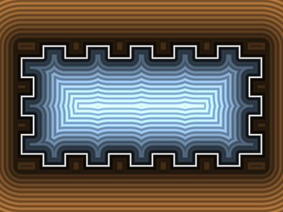
- 2D · keycap#
lc::box(size: Vec3,t: number,opts: #{ inner?: bool, finger?: number, fit?: number, gap?: number } = #{},): Shape The six panels of a closed box, from
lc::box_panels, laid out flat to cut, their lower left corner on the origin.size,t- as
lc::box_panelstakes them optsinner,finger,fit- as
lc::box_panelstakes them gap- the space between two panels,
2 * tby default
The panels lie in three rows from the bottom up:
bottomandtop, thenfrontandback, thenleftandright.lc::sheetdraws the material around them, to see that they fit on it.Notes- Field: as
lc::box_panels’s.
See alsolc::box_panels,lc::sheet.Example A box 60 by 40 by 30 inside, in 3 mm material, its joints with 0.1 of play.
lc::box([60, 40, 30], 3, #{inner: true, fit: 0.1})
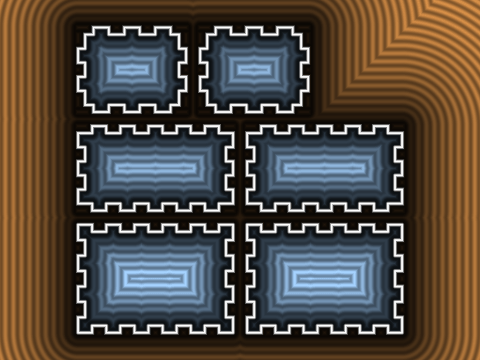
- 2D · keycap#
lc::sheet(size: Vec2): Shape A sheet of material, its lower left corner on the origin, to draw with
#{role: "score"}around a layout.size[width, height]
Drawn to score, the 2D views show its outline only, so the parts laid out on it show whether they fit. An export scores it too: leave its draw out of the script, or its layer out of the laser’s job, to keep the sheet whole.
Notes- Field: exact.
See alsolc::box.Example A sheet 300 by 200.
lc::sheet([300, 200])
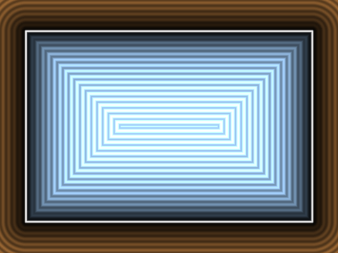
Points
These take points and give points: they move, turn, mirror, offset and combine an outline’s corners when the script runs, and make no field.
polygon, rounded_polygon, stroke and capsule make one from what they give.
An outline built from points costs several times what primitives and their combinations do, to load and to render; see Performance.
So they are for outlines measured or traced, and for one that must be rounded exactly after it is combined.
import "keycap/points" as points;
- math · keycap#
points::regular_polygon(n: number, r: number): Vec2[] The corners of
regular_polygon(n, r), anticlockwise from the one on +X.n- the number of sides, 3 or more
r- the circumradius, from the centre to a corner
See alsoregular_polygon,points::star,rounded_polygon.Example The corners of a square standing on one corner, 10 from the centre.
points::regular_polygon(4, 10)
[[10.0, 0.0], [0.0, 10.0], [-10.0, 0.0], [0.0, -10.0]]Example A flange with six bolt holes, one at each corner of a hexagon.
let holes = points::regular_polygon(6, 22) .map(|p| circle(2).move(p)); circle(30).difference(union(holes))
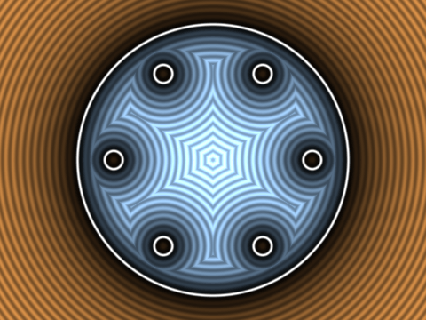
- math · keycap#
points::star(n: number, r: [number, number]): Vec2[] The corners of
star(n, r), anticlockwise from the point on +X, points and inner corners in turn.n- the number of points, 2 or more
r[outer, inner], the radius of the points and that of the inner corners
See alsostar,points::regular_polygon,points::union.Example The corners of a star of 2 points, a rhombus.
points::star(2, [10, 5])
[[10.0, 0.0], [0.0, 5.0], [-10.0, 0.0], [0.0, -5.0]]- math · keycap#
points::bezier(points: Vec2[] | Vec3[], n: number): Vec2[] | Vec3[] Points along a Bézier curve, for an outline that follows the curve.
points- the control points, 2D or 3D, as for
bezier_point n- the number of steps, 1 or more
There are
n + 1points, at evenly spaced values of the curve’s parametert, from the first control point to the last. They are not evenly spaced along the curve.Notes- A
polygonthrough them has straight edges, so it is only as smooth asnmakes it.
See alsobezier_point,bezier_stroke,polygon.ReferencesFrom OpenSCADbezier3(points, n)ispoints::bezier(points, n).Example The points of a curve from three control points, in two steps.
points::bezier([[0, 0], [10, 20], [20, 0]], 2)
[[0.0, 0.0], [10.0, 10.0], [20.0, 0.0]]Example A fin with a curved back, its outline a curve closed by a straight base.
let curve = [[0, 0], [5, 30], [30, 25], [40, 0]]; polygon(points::bezier(curve, 24))
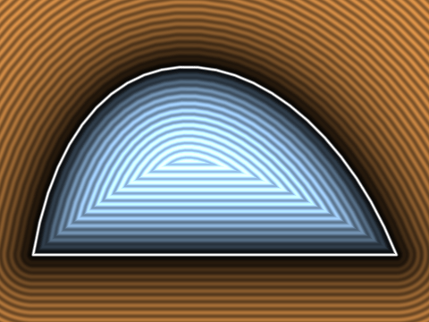
- math · keycap#
points::move(points: Outline, v: Vec2 | Vec3): Outlinetype Outline = Point[] | Point[][]type Point = Vec2 | Vec3 | [number, number, #{ arc?: number, round?: number }] Points moved by a vector.
points- the points, 2D or 3D; or a list of such lists, the loops of an outline, as
points::uniongives them v- the move; a 2D
vmoves 3D points along X and Y only
See alsomove,points::rotate,points::scale.Example Two points moved 10 along X.
points::move([[0, 0], [1, 2]], [10, 0])
[[10.0, 0.0], [11.0, 2.0]]- math · keycap#
points::rotate(points: Outline, angle: number): Outlinetype Outline = Point[] | Point[][]type Point = Vec2 | Vec3 | [number, number, #{ arc?: number, round?: number }] Points turned about the Z axis, as
rotate_zturns shapes.points- the points, 2D or 3D; or a list of such lists, the loops of an outline, as
points::uniongives them angle- the turn, in degrees, anticlockwise looking down
See alsorotate_z,points::move,points::scale.Example A point on +X turned a quarter turn.
points::rotate([[10, 0]], 90)
[[0.0, 10.0]]- math · keycap#
points::scale(points: Outline, s: number | Vec2 | Vec3): Outlinetype Outline = Point[] | Point[][]type Point = Vec2 | Vec3 | [number, number, #{ arc?: number, round?: number }] Points scaled about the origin.
points- the points, 2D or 3D; or a list of such lists, the loops of an outline, as
points::uniongives them s- one factor for every axis, or one for each
A polygon through scaled points keeps an exact field.
scaleon the polygon itself leaves only a bound when it scales the axes differently. Arcs and corners’ own radii in a map scale with X and Y, which must then scale alike.Notes- A negative factor mirrors the points and keeps their order, so an outline through them goes round the other way;
points::mirrorkeeps it going the same way.
See alsoscale,points::move,points::mirror.From OpenSCADscale([2, 1]) polygon(points)ispolygon(points::scale(points, [2, 1])).Example Two points stretched to twice their distance along X.
points::scale([[1, 1], [2, -1]], [2, 1])
[[2.0, 1.0], [4.0, -1.0]]- math · keycap#
points::mirror(points: Outline, line: "x" | "y" | [Vec2, Vec2]): Outlinetype Outline = Point[] | Point[][]type Point = Vec2 | Vec3 | [number, number, number] | [number, number, #{ arc?: number, round?: number }] Points mirrored across a line, in reverse order, so that an outline through them goes round the same way.
points- the points, 2D or 3D; or a list of such lists, the loops of an outline, as
polygontakes them line"x"mirrors across X, negating each X;"y"across Y;[a, b]across the line through the pointsaandb
An arc
#{arc: a}stays on the edge it bends, which now starts from the point after it, and turns the same way relative to the outline. A corner’s own radius stays with its point, as does a third coordinate.See alsoreflect,symmetric_x,points::scale.From OpenSCADmirror([1, 0]) polygon(points)ispolygon(points::mirror(points, "x")).Example A symmetric outline, its right half given and its left half mirrored onto it.
let half = [[0, 0], [15, 0], [10, 20], [0, 25]]; polygon(half + points::mirror(half, "x"))
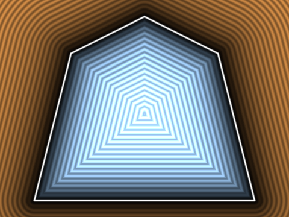
Example A tab and its mirror image across the diagonal, a bulging end on each.
let tab = [[2, 0], [12, 0, #{arc: 3}], [12, 4], [2, 4]]; union(rounded_polygon(tab, 0.5), rounded_polygon(points::mirror(tab, [[0, 0], [1, 1]]), 0.5))
- math · keycap#
points::miter_offset(points: Vec2[], d: number): Vec2[] The corners of a polygon moved so that its edges move outwards by
dand its corners stay sharp.points- the corners, each
[x, y], as inpolygon, either way round d- the distance; a negative one moves the edges inwards
Every edge moves
dalong its outward normal, and each corner goes to where its two edges now meet.Notes- A sharp corner moves further than
d, byd / sin(a / 2)for a corner of anglea. - A
dlarge enough to make an edge vanish leaves a polygon that crosses itself.
See alsooffset,polygon,points::union.ReferencesFrom OpenSCADoffset(delta = d) polygon(points)ispolygon(points::miter_offset(points, d)).Example A pocket 0.3 mm larger than a triangular part all round, its corners still sharp.
let tri = [[-10, -8], [12, -8], [-10, 8]]; rect([40, 30]).difference(polygon(points::miter_offset(tri, 0.3)))
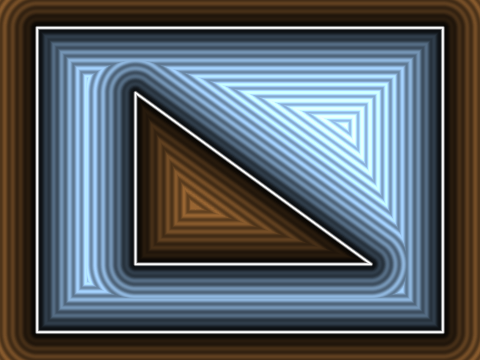
- math · keycap#
points::union(a: Outline, b: Outline): Point[][]type Outline = Point[] | Point[][]type Point = Vec2 | [number, number, #{ arc: number }] The union of two outlines, as new points.
a,b- the outlines, each a list of points as
polygontakes them, either way round, or a list of such lists for an outline of several parts or with holes
The result is a list of loops, anticlockwise round each part and clockwise round each hole.
polygon,rounded_polygonand the combinations here take it as it is. An edge that is an arc stays one,[x, y, #{arc: r}]as inrounded_polygon. Outlines that share an edge leave no seam there: two squares side by side make one rectangle.Shapes combined with
unionhave a field that is only a bound inside, where they overlap. A polygon through the result’s points has an exact field instead, so its offsets come out right, androunded_polygoncan round the corners where the outlines meet. Combine shapes, not points, unless the result is to be rounded or offset so.Each edge is cut where the other outline meets it. A piece is kept by whether its middle lies inside the other outline, outside it, or along one of its edges. The kept pieces are then joined into loops.
Notes- The points are exact to about a millionth of the outlines’ size.
- The outlines must not cross themselves.
- Parts that meet at a single point come out as loops of their own.
- About
n * msteps for outlines ofnandmedges, when the script runs.
See alsopoints::intersection,points::difference,union,rounded_polygon.ReferencesFrom OpenSCADunion() { polygon(a); polygon(b); }ispolygon(points::union(a, b)).Example An L of two bars, its inner corner rounded by 3.
let bar = [[0, 0], [40, 0], [40, 10], [0, 10]]; let upright = [[0, 0], [10, 0], [10, 30], [0, 30]]; rounded_polygon(points::union(bar, upright), 1, #{concave: 3})
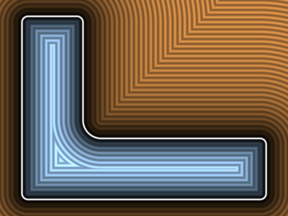
- math · keycap#
points::intersection(a: Outline, b: Outline): Point[][]type Outline = Point[] | Point[][]type Point = Vec2 | [number, number, #{ arc: number }] The intersection of two outlines, as new points.
a,b- the outlines, as for
points::union
The result is as for
points::union: loops thatpolygonandrounded_polygontake as they are, and an empty list when the outlines do not overlap.Notes- About
n * msteps for outlines ofnandmedges, when the script runs.
See alsopoints::union,points::difference,intersection.From OpenSCADintersection() { polygon(a); polygon(b); }ispolygon(points::intersection(a, b)).Example A lens where two discs overlap, each a loop of two half circles, its tips rounded.
let disc = [[6, -10, #{arc: 10}], [6, 10, #{arc: 10}]]; rounded_polygon(points::intersection(disc, points::mirror(disc, "x")), 1)
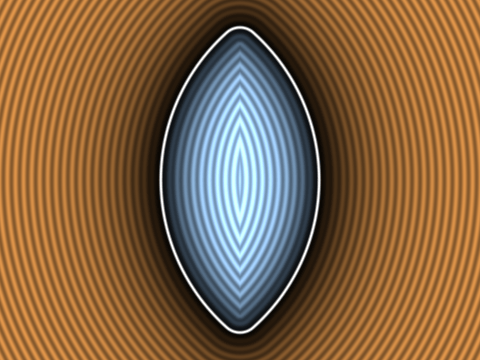
- math · keycap#
points::difference(a: Outline, b: Outline): Point[][]type Outline = Point[] | Point[][]type Point = Vec2 | [number, number, #{ arc: number }] The outline
awithoutb, as new points.a- the outline to cut from, as for
points::union b- the outline to cut away
The result is as for
points::union; abinsidealeaves a hole, a loop of its own.Notes- About
n * msteps for outlines ofnandmedges, when the script runs.
See alsopoints::union,points::intersection,difference.From OpenSCADdifference() { polygon(a); polygon(b); }ispolygon(points::difference(a, b)).Example A plate with a round notch, its corners then rounded, the notch’s too.
let plate = [[-20, -10], [20, -10], [20, 10], [-20, 10]]; let notch = [[8, 10, #{arc: 8}], [-8, 10, #{arc: 8}]]; rounded_polygon(points::difference(plate, notch), 2)
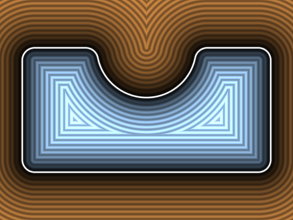